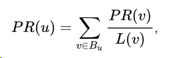
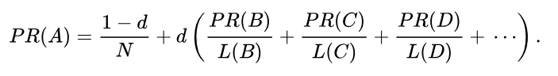

The Google Page Rank Algorithm was the first search algorithm used by google.
The Google Page Rank Algorithm was developed by Larry Page, the current CEO of Alphabet. The algorithm is named after him and the webpage. It was developed in 1996 in Stanford and introduced to the public in 1998. The algorithm was based off of Citation Analysis and Hyper Search. Citation Analysis was developed by Eugene Garfield in 1950 and measured the importance of documents through citations. Hyper Search was developed in 1997 by Massimo Marchiori. It measured relationships between webpages and the web. The Google Page Rank Algorithm is still in use today except Google has other ways of ranking pages now.
It is a link anlysis algorithm which measures webpages based on "link popularity". Each webpage is given a numerical weighting depending on the number of incoming links and the number is influenced by relative importance. Pages linked by important webpages are deemed as important. The Google Page Rank Algorithm is based off of the webgraph. All incoming links are like votes for that page. Also, the algorithm is recursive.
Taken from wikipedia:
“The Pagerank algorithm outputs a probability distribution used to represent the likelihood that a person randomly clicking on links will arrive at any particular page.”

- v and u are pages
- PR(u) and PR(v)
- Pagerank of the page
- L(v) is the number of links in v
- B(u) = pages linking to u
- The initial page rank of a page is assumed as 1/total # of pages
- repeat the formula several times to get a more accurate page rank

- D = probability that a user will continue clicking on links (.85)
- PR = pagerank
- L = outgoing links
- N = # of pages
- Apply the formula on every page to simulate one pass of the algorithm and repeat to simulate multiple passes
- Always use the most recent page rank of a page when calculating the page rank of another page